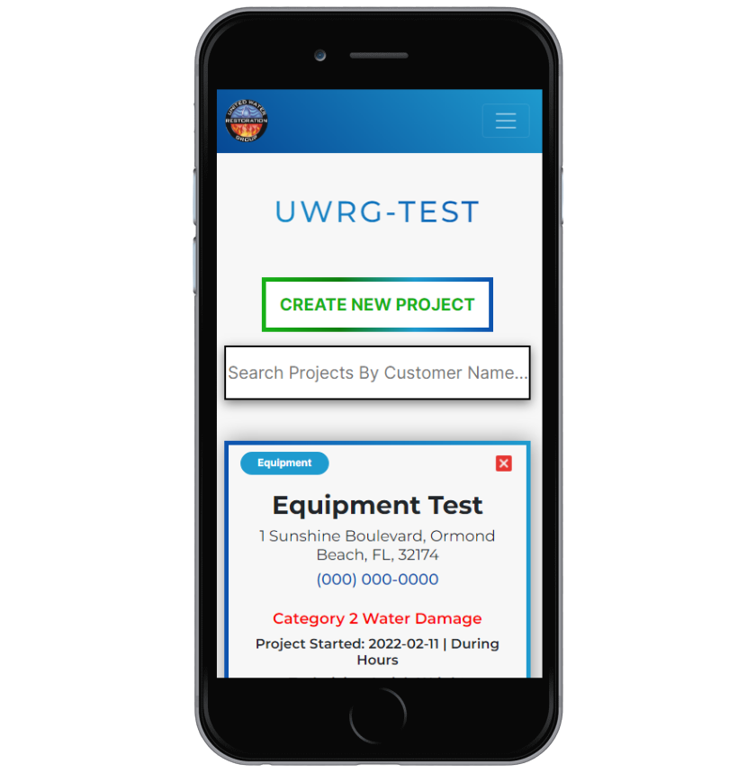

United Water Restoration Group needed an app that was quick and helped sell cash jobs. Doing an estimate
off of scope sheet could take anywhere from 20-30 minutes, not to mention it also needed to be accurate.
Making an estimate is hard, theres a lot to think about and the last thing you want to do is give
someone an inaccurate information.
With the help of
the Water Damage Estimator, technicians can now create a much more accurate estimate in an average time
of 5
minutes. All the
technician needs to do is put in the measurements of the room they are working in and answer a few
questions and this
application will automatically calculate how much equipment they will need. It will also automatically
calculate how
much the job will cost and put it into a format that can be shown to a customer.


Authentication
Using Auth0 we can ensure that only our employees see customer information. Estimates are not rendered
unless a user is
logged in. A user is also not allowed to create a new Damaged Home or Damaged Room unless they are
authenticated first.
Roles
UWRG Water Damage Estimator has three different types of roles; User, Moderator and Admin. Roles have
allowed us to add
functionality to give users different permissions within the application.
Access
UWRG Water Damage Estimator has access which controls what a user sees. Access controls what a user sees
and what the
API returns with. This allows us to support a wide range of locations in one application. A user can
only see estimates
in their access. Admins can see all access’. Every single Access also has its own price list that can be
edited by the
moderator of that access.
User Management
User management has been made easy in UWRG Water Damage Estimator. In the admin control panel you are
able to look up
users by name, edit users accounts, and delete users accounts. Editing user information was designed to
be as easy as
possible, in UWRG Water Damage Estimator you can change user settings with a few button clicks.
Calculator
UWRG Water Damage Estimator can accurately calculate the volume and square footage of a room, standing
water in liters
and gallons, the number of Dehumidifiers needed, the number of Air Movers needed by area and linear
feet, and the number
of Air Scrubbers needed. Once all the rooms are finished being calculated in a Damaged Home they are
totaled
automatically in the total tab. The total tab automatically calculates all other services we charge for
based off of the
Damaged Rooms in a Damaged Home.
Good Memory
Everything you save in UWRG Water Damage Estimator will be just where you left it. All form fields are
auto populated
with information you have already entered to make editing things much easier.
Formatting
UWRG Water Damage Estimator was designed to look good on anything. UWRG Water Damage supports formatting
for mobile and
tablet viewports to ensure it looks good on the go and good in the office.
Equipment
In UWRG Water Damage Estimator equipment can be easily added and deleted from the admin controls.
Equipment is
automatically factored into the calculator making changing equipment easy.
Unfortunatley I cannot go into more detail about how powerfull the Water Damage Estimator Really is. I
really enjoyed working on this project, it was a lot of fun to figure out the restoration industry and
make something that helps people on a daily basis. This project was quite the challenge too. I worked on
it solo and in a way it became my baby. I was responsible for the front-end and back-end development of
this project so I know the ins and outs of the entire application. Watching it grow to handle more and
more has been nothing less
than fantasitic. I am proud to say I have created something that has met and surpassed the goals
originally
planned for it. I cant wait to see what other challenges I will face in the future.